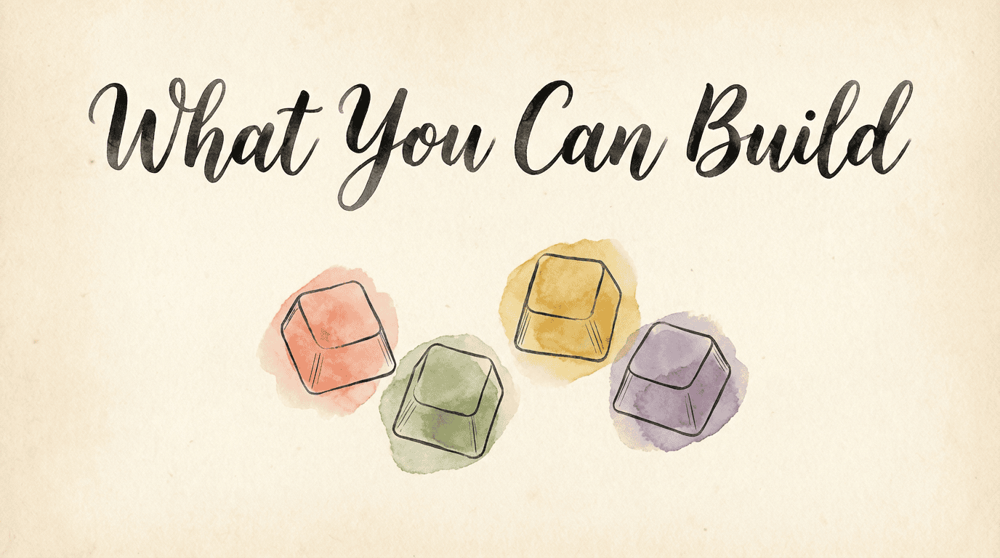
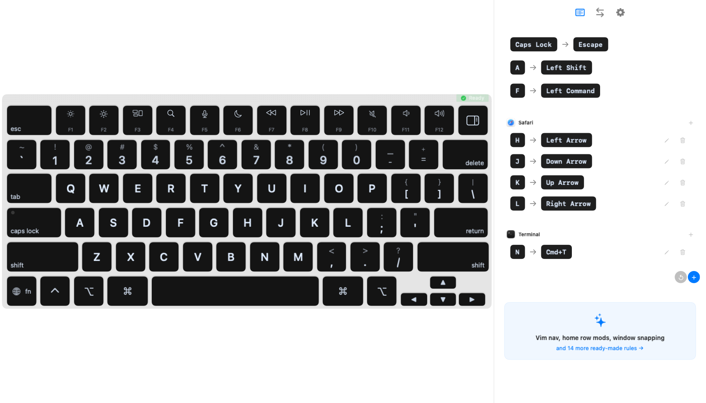
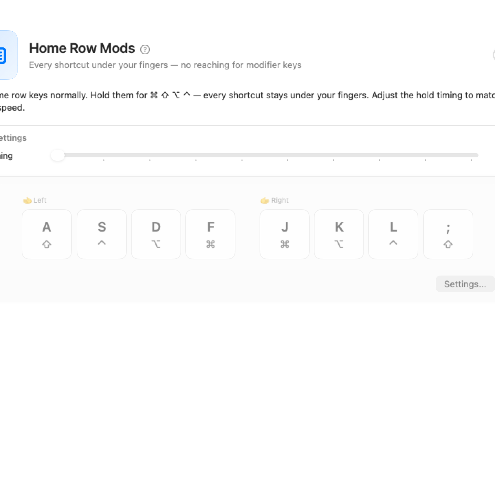

KeyPath keeps your hands on the home row and your focus on your work. Here's what that looks like in practice — from launching apps to tiling windows to typing on any layout. Each section links to a detailed guide.
New to keyboard customization? Read Keyboard Concepts first.
Stop reaching for the Dock or Spotlight. Hold one key, press a letter, and your app opens immediately — Safari, Terminal, Messages, anything. You can bind URLs, files, and folders the same way.
Hold Caps Lock + S → Safari opens
Hold Caps Lock + T → Terminal opens
Hold Caps Lock + 1 → GitHub opensOne key hold + one letter = instant access to anything on your Mac. No mouse, no Cmd+Space, no typing a name.

How to set it up: Open the Launchers tab, click Add Shortcut, choose your key and target. See the Launching Apps guide for the full walkthrough.
Every keyboard shortcut requires a modifier — Command, Shift, Control, Option. Normally those keys are in the corners, forcing your hands off the home row. Home row mods put them right under your fingertips:

Hold F + press C = Copy. Hold A + press Tab = Shift+Tab. Your hands never move.
How to set it up: Enable the "Home Row Mods" pre-built rule in the Custom Rules tab. See the full Shortcuts Without Reaching guide.
Stop dragging windows around with your mouse. Snap any window to a half, quarter, or full screen with a keystroke:
┌───────────┬───────────┐ ┌─────┬─────┐
│ │ │ │ U │ I │ Four corners
│ Left │ Right │ ├─────┼─────┤ with a single
│ half │ half │ │ N │ M │ keystroke
│ │ │ └─────┴─────┘
└───────────┴───────────┘How to set it up: Enable the "Window Snapping" pre-built rule, or create custom bindings. See the Window Management guide.
Your browser and your code editor need different shortcuts. KeyPath detects which app is in front and switches your key mappings automatically:
In Safari: In VS Code:
H J K L = arrow keys H J K L = normal letters
(keyboard-driven (your editor handles
browsing) its own shortcuts)No manual toggling — just switch apps and your keyboard adapts.
How to set it up: Go to the Custom Rules tab, click New Rule, select the target app, and add your mappings. See the Window Management guide.
Arrow keys are small, far away, and break your typing flow. Hold a modifier to turn your right hand into full-size navigation — without moving your hands:
Right hand becomes:
┌─────┬─────┬─────┬─────┐
│ ← │ ↓ │ ↑ │ → │ Full-size keys
├─────┼─────┼─────┼─────┤ right on the
│Home │PgDn │PgUp │ End │ home row
└─────┴─────┴─────┴─────┘Especially helpful on a MacBook where the arrow keys are tiny.
How to set it up: Create a custom rule with a tap-hold key that activates a navigation layer on hold. See One Key, Multiple Actions for how dual-role keys work.
Run out of shortcut combinations? Type short mnemonics instead. Press a leader key, then a few letters that spell out what you want:
Leader → S → M → Messages opens ("switch to messages")
Leader → G → H → GitHub opens ("go to hub")
Leader → W → L → Window snaps left ("window left")Easy to remember, impossible to run out of.
How to set it up: Turn on Sequences in the Rules tab, then click Customize…. See Type Memorable Shortcut Paths for setup and timing guidance.
Whether you're learning Colemak, using a French AZERTY layout, or typing on a split ergonomic board, KeyPath adapts. Switch layouts in the UI and your keyboard overlay updates instantly — a live cheat sheet on your screen.
KeyPath supports 8 keymaps and 12 physical keyboard layouts, from MacBook to Kinesis Advantage 360.
Learn more: Alternative Layouts · Keyboard Layouts
The real power comes from combining ideas. A complete setup might look like:
┌─────────────────────────────────────────────────────┐
│ │
│ Caps Lock ── tap ──→ Escape │
│ ── hold ─→ launch apps with one letter │
│ │
│ Home Row ── tap ──→ Letters │
│ (A S D F) ── hold ─→ Modifiers under your │
│ fingertips │
│ │
│ Space ── tap ──→ Space │
│ (Leader) ── hold ─→ Type a mnemonic to act │
│ │
│ Your hands never leave the home row. │
└─────────────────────────────────────────────────────┘Start with one idea, get comfortable, then add the next. There's no rush.